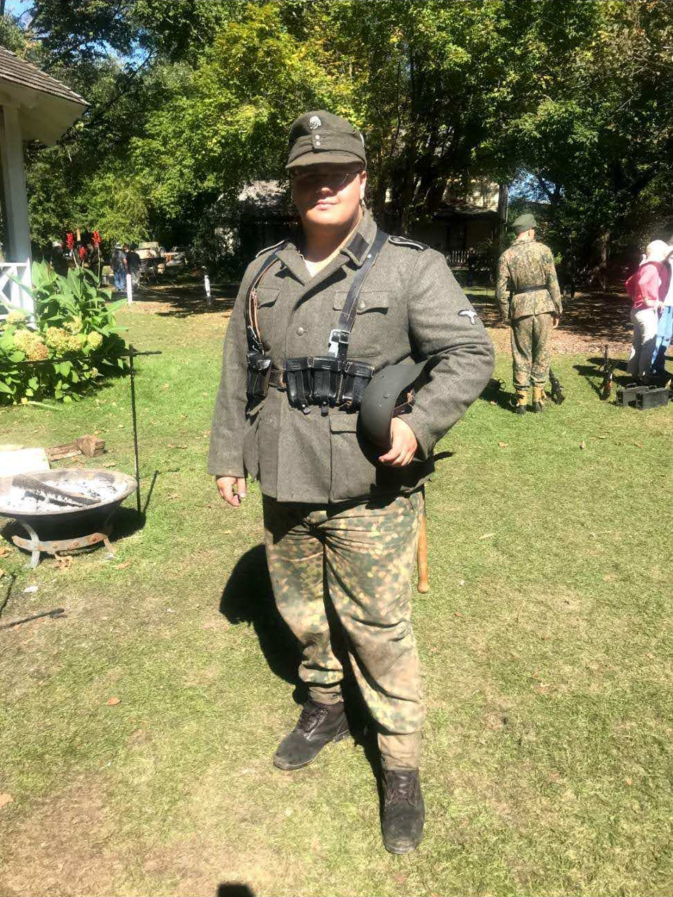

His Imperial Sovereign

Emperor
Jeremy I
His Imperial Sovereign, Jeremy I is the first citizen and founder of the Jera Empire. Who founded the micronation as a hobbiest project.
When he turned 12, the Emperor's mission was to plan for the end of the United States and the Holy Roman Empire. With the idea that he would be a permanent Monarch but not absolute and thus would be an constitutional monarch for when an Imperial Republic.
At age 17, the Emperor began learning more about the military aspect of running the nation and being one of it's commanding officers. This was accomplished by partaking in battle reenactments of the second world war.

At around age 19, he also began becoming more active for the diplomacy stage. Partaking in activities designed to encourage speaking skills present in the United States.
At age 22 he started travelling the neighboring United States to see how the Jera Empire could withstand the Covid 19 Pandemic.